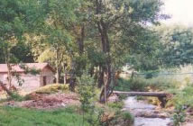
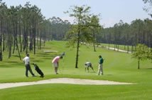
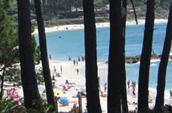

|  |  |
 |
 |
| COUNTRY HOUSE | LOCATION | CONTACT US | MONASTERY | GOLF | ROUTES | BEACHES | CELEBRATIONS |
|
COMARCA DEL SALNÉS (Salnés Region) <click
to see the map> Location: Rías Baixas - Pontevedra (Galicia - Spain) Population: 104.139 inhabitants Area: 265 km2 Municipalities Cambados, Illa de Arousa, El Grove, Meaño, Meis, Ribadumia, Sanxenxo, Vilagarcía de Arousa and Vilanova de Arousa. Thoroughfares - The "Autopista del Atlántico" (highway A-9) Coruña-Vigo, and the N-550 (national road) are the main connections of the region with the cities Santiago de Compostela and Pontevedra. - The "Vía Rápida del Salnés" (high speed road) connects the highway A-9 with Sanxenxo and extends to Vilagarcía, Cambados and El Grove. - The C-550 Fisterra-Tui (regional road) traveling together the coast. - The N-640 (Vilagarcía-Vegadeo) connects Vilagarcía with Caldas de Reis, and from here with the N-550, which goes to Santiago de Compostela at a distance of 45 km. on the north, and to Pontevedra at 22 km. on the south. - Train: Vilagarcía de Arousa train station, traveling from A Coruña to Vigo. Municipality of Meis Borders: Meaño, Ribadumia, Vilanova, Poio Population: 5.500 inhabit. approx. Area: 51,82 km2. Parishes: Sta. María de Armenteira, Sta. María de Paradela, San Vicente de Nogueira, San Salvador de Meis, San Martiño de Meis, San Lourenzo de Nogueira, Sto. Tomé de Nogueira. |
|||||||||||||||||||||||||
|
MAP OF SALNÉS 
|
 |
||||||||||||||||||||||||
| Country House | Location | Contact Us | Monastery | Golf Club | Routes | Beaches | Celebrations | |||||||||||||||||||||||||